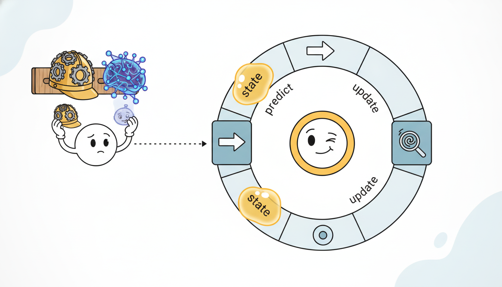

"For seven sections they called me a filter, drew me as predict-then-update, and trusted my covariance. Now they want to learn my transition matrix from data and call me a neural network. Same loop, new wardrobe. I was recurrent before recurrent was cool."
A Hidden State About to Be Reborn as a Neural Network
Every filter in this chapter is the same machine: a recurrence that carries a state forward in time, corrects that state with each new observation, and reads out a prediction. The Kalman filter, the hidden Markov model forward pass, and the exponential smoother differ only in what the state is and how the update is computed; strip those specifics away and one loop remains. That loop is exactly the skeleton of the recurrent neural network you will meet in Chapter 10. The classical filters fix the transition, the readout, and the gain by hand from a model you assume is correct; the neural recurrence learns all three from data and pays for that flexibility by giving up the closed-form uncertainty the Kalman filter hands you for free. This section makes the equivalence explicit, writes the generic recurrence once, shows the three classical filters as instances of it, maps the Kalman update term by term onto a linear recurrent cell, and closes Part II by pointing the same loop into the neural sequence models of Part III. This is the hinge of the book's temporal thread.
Across Section 7.1 through Section 7.5 we built the state-space view of time series: a latent state that evolves through a transition model, an observation model that links the state to what we measure, and the recursive filters that track the state as data arrive. We derived the Kalman filter for linear-Gaussian systems, the forward pass for the discrete-state hidden Markov model of Section 7.5, and we can read the exponential smoother of Chapter 5 as the simplest recursive estimator of all. Each looked like a separate algorithm with its own notation. This bridge section argues that they are one algorithm, and that the algorithm is a recurrence, the same primitive that underlies the entire neural sequence-modeling enterprise of Part III. We will use the latent-state symbol $\mathbf{h}_t$ for the carried state, $\mathbf{x}_t$ for the incoming observation, and $\hat{\mathbf{y}}_t$ for the readout, the notation collected in the unified table of Appendix A and reused for every recurrent model in the book.
The deliberate choice of the symbol $\mathbf{h}_t$ is itself a piece of the argument. In the filtering chapters you may have seen the state written $\mathbf{x}_t$ or $\mathbf{s}_t$; from here on we write the carried, latent summary as $\mathbf{h}_t$ and reserve $\mathbf{x}_t$ for the observation, because that is the convention of the neural sequence literature this section bridges into. Reading the Kalman filter and the RNN in one shared notation is not cosmetic; it is what lets you see, in subsection two, that one equation is literally the other.
By the end of this bridge you should be able to do four concrete things: write any filter from this chapter in the generic recurrence form $\mathbf{h}_t = f(\mathbf{h}_{t-1}, \mathbf{x}_t)$, $\hat{\mathbf{y}}_t = g(\mathbf{h}_t)$; map the Kalman mean update onto a linear recurrent cell term by term; state precisely what calibrated uncertainty you forfeit when you replace a hand-specified filter with a learned recurrence, and where the book buys it back; and run a single driver loop with either a Kalman update or an RNN cell slotted into it. Those four skills are the load-bearing supports of the whole second half of the book.
1. The Shared Skeleton: Every Filter Is a Recurrence Beginner
A useful way to feel the shared structure before formalizing it is to watch what each filter does when a single new measurement lands. The exponential smoother nudges its level a fraction $\alpha$ of the way toward the new number. The HMM tilts its belief vector toward whichever hidden states best explain the new symbol. The Kalman filter shifts its mean by the gain times the surprise, the gap between what it predicted and what it saw. Three different arithmetic operations, but the same verb: take the carried state, fold in one observation, get a new carried state. The rest of the past never reappears, because the state already absorbed it. That is the move we are about to name.
Set aside the specific equations of each filter and ask only what they have structurally in common. Each one maintains a quantity, the state, that summarizes everything the filter knows about the past. At every time step it does two things. First it advances the state in time, propagating what it knew before the new measurement arrived. Then it folds in the new observation, correcting the propagated state toward what was actually measured. Finally, whenever a prediction is needed, it reads the state out. That is the entire pattern, and it is a recurrence:
$$\mathbf{h}_t = f(\mathbf{h}_{t-1}, \mathbf{x}_t), \qquad \hat{\mathbf{y}}_t = g(\mathbf{h}_t).$$The state-update function $f$ takes the previous state $\mathbf{h}_{t-1}$ and the current observation $\mathbf{x}_t$ and returns the new state $\mathbf{h}_t$; the readout function $g$ turns the state into a prediction $\hat{\mathbf{y}}_t$. Nothing about this form prejudges whether the state is a Gaussian mean and covariance, a discrete probability vector, or a single scalar level. Nor does it prejudge whether $f$ and $g$ are linear, fixed by a physical model, or learned. The recurrence is the genus; the filters are species. Figure 7.6.1 draws the genus once, and the rest of this section fills in the species.
The two-step rhythm inside $f$, advance then correct, is worth holding onto explicitly, because it survives all the way into the deep models of Part III. Advancing is the model's guess about how the state would evolve with no new information; correcting is the data pulling that guess back toward reality. A pure prediction model has only the first step and drifts; a pure memorization model has only the second and cannot extrapolate. Every good sequence model, classical or neural, balances the two, and the balance point is exactly what the Kalman gain, and later the LSTM gate, controls.
To see that this is not loose analogy, write each of the three classical filters in the $f$/$g$ form. For the exponential smoother the state is a single scalar level $\ell_t$, the update is a convex blend of the old level and the new observation, and the readout is the identity:
$$\ell_t = (1 - \alpha)\,\ell_{t-1} + \alpha\, x_t, \qquad \hat{y}_t = \ell_t.$$For the HMM forward pass of Section 7.5 the state is the (normalized) forward vector $\boldsymbol{\alpha}_t$, a probability distribution over the discrete hidden states; the update multiplies by the transition matrix $\mathbf{A}$, applies the emission likelihood of the new observation through the diagonal matrix $\mathbf{B}(x_t)$, and renormalizes; the readout is whatever posterior quantity we want, here the predictive distribution over the next observation:
$$\boldsymbol{\alpha}_t = \frac{\mathbf{B}(x_t)\,\mathbf{A}^{\top} \boldsymbol{\alpha}_{t-1}}{\mathbf{1}^{\top}\mathbf{B}(x_t)\,\mathbf{A}^{\top}\boldsymbol{\alpha}_{t-1}}, \qquad \hat{\mathbf{y}}_t = \mathbf{E}^{\top}\boldsymbol{\alpha}_t.$$For the Kalman filter the state is the pair $(\hat{\mathbf{m}}_t, \mathbf{P}_t)$ of posterior mean and covariance; the update is the predict-then-correct cycle we derived in Section 7.2; the readout maps the mean through the observation matrix. We unfold the Kalman update fully in the next subsection because it is the species that maps most directly onto a neural cell. The point of this subsection is the unification itself: three filters that looked unrelated are one recurrence wearing three costumes.
It helps to tabulate the three species against the one genus, because the columns make the shared skeleton unmistakable. Read across each row and you are reading the same recurrence; read down each column and you are reading one filter.
| Generic recurrence | Exponential smoother | HMM forward pass | Kalman filter |
|---|---|---|---|
| state $\mathbf{h}_t$ | scalar level $\ell_t$ | belief vector $\boldsymbol{\alpha}_t$ over discrete states | mean and covariance $(\hat{\mathbf{m}}_t, \mathbf{P}_t)$ |
| update $f(\mathbf{h}_{t-1}, \mathbf{x}_t)$ | convex blend by $\alpha$ | transition, emission, renormalize | predict then correct by gain $\mathbf{K}_t$ |
| readout $g(\mathbf{h}_t)$ | identity, $\hat{y}_t = \ell_t$ | $\mathbf{E}^{\top}\boldsymbol{\alpha}_t$ | $\mathbf{H}\hat{\mathbf{m}}_t$ |
| what fixes $f$, $g$ | one constant $\alpha$ | matrices $\mathbf{A}$, $\mathbf{B}$ | model matrices $\mathbf{F}$, $\mathbf{H}$, noise covariances |
Take a two-state weather HMM with hidden states $\{\text{sun}, \text{rain}\}$, transition matrix $\mathbf{A} = \begin{bmatrix} 0.8 & 0.2 \\ 0.3 & 0.7 \end{bmatrix}$ (rows are from-state), and emission probabilities for observing "umbrella" of $0.1$ under sun and $0.8$ under rain. Suppose the prior belief is $\boldsymbol{\alpha}_{t-1} = (0.6, 0.4)$. The transition step gives the predicted belief $\mathbf{A}^{\top}\boldsymbol{\alpha}_{t-1} = (0.6\cdot 0.8 + 0.4\cdot 0.3,\; 0.6\cdot 0.2 + 0.4\cdot 0.7) = (0.60, 0.40)$. Now we observe an umbrella, so we multiply elementwise by the emission likelihoods $(0.1, 0.8)$, giving the unnormalized vector $(0.060, 0.320)$. Renormalizing by its sum $0.380$ yields the updated belief $\boldsymbol{\alpha}_t = (0.158, 0.842)$. The umbrella sighting moved the belief sharply toward rain, exactly the "correct toward the observation" half of the generic recurrence, with the renormalization playing the role the Kalman gain plays for the Gaussian filter: it scales the correction by how surprising the observation was.
What makes a recurrence work is that the state $\mathbf{h}_t$ is a sufficient statistic for prediction: once you know $\mathbf{h}_t$, the entire history $\mathbf{x}_1, \dots, \mathbf{x}_t$ tells you nothing more about the future. The Kalman filter earns this property exactly under linear-Gaussian assumptions, where the posterior mean and covariance are provably sufficient. The HMM earns it exactly because of the Markov property of Section 7.5. A learned RNN only approximates sufficiency, compressing the past into a fixed-width vector and hoping the compression keeps what matters. This single idea, "carry a sufficient summary, not the whole history", is why a recurrence can process an unbounded sequence in bounded memory, and it is the property attention deliberately abandons in subsection four.
Calling all of this "filtering" can mislead a newcomer, because in signal processing a filter usually means something that removes frequencies. The estimation sense comes from Norbert Wiener's wartime work on predicting an aircraft's position from noisy radar, where "filtering" meant separating signal from noise in real time. Rudolf Kalman's recursive solution inherited the name, and so a Kalman filter does not block frequencies at all; it recursively estimates a hidden state. When you meet "filtering, smoothing, and prediction" as the three canonical state-estimation problems, read them as "estimate the state now, in the past, and in the future", with no frequency response in sight.
2. The Kalman Filter as a Linear RNN Intermediate
The Kalman filter is the species that reveals the bridge most sharply, because its update is already linear. Recall the predict-update equations from Section 7.2. The predict step propagates the posterior mean through the transition matrix $\mathbf{F}$, and the correct step nudges it toward the observation $\mathbf{x}_t$ in proportion to the Kalman gain $\mathbf{K}_t$:

The algebra is worth doing slowly once, because the rearrangement is the whole bridge. Distribute the gain across the innovation in the correct term, $\mathbf{K}_t(\mathbf{x}_t - \mathbf{H}\mathbf{F}\hat{\mathbf{m}}_{t-1}) = \mathbf{K}_t\mathbf{x}_t - \mathbf{K}_t\mathbf{H}\mathbf{F}\hat{\mathbf{m}}_{t-1}$, then collect every term carrying $\hat{\mathbf{m}}_{t-1}$ on one side and every term carrying $\mathbf{x}_t$ on the other:
$$\hat{\mathbf{m}}_t = \mathbf{F}\hat{\mathbf{m}}_{t-1} - \mathbf{K}_t\mathbf{H}\mathbf{F}\hat{\mathbf{m}}_{t-1} + \mathbf{K}_t\mathbf{x}_t = \big(\mathbf{I} - \mathbf{K}_t \mathbf{H}\big)\mathbf{F}\,\hat{\mathbf{m}}_{t-1} + \mathbf{K}_t\,\mathbf{x}_t.$$What started as a two-stage predict-then-correct procedure is now a single line: one matrix multiplying the previous state, plus another matrix multiplying the current input. That is the defining shape of a recurrent cell, and nothing in the derivation assumed anything beyond the linearity we already had.
Now compare with the canonical linear recurrent cell that opens Chapter 10, $\mathbf{h}_t = \mathbf{W}\mathbf{h}_{t-1} + \mathbf{U}\mathbf{x}_t$, readout $\hat{\mathbf{y}}_t = \mathbf{V}\mathbf{h}_t$. The correspondence is exact, term for term. The Kalman mean update is a linear recurrent cell whose recurrent weight is $(\mathbf{I} - \mathbf{K}_t\mathbf{H})\mathbf{F}$, whose input weight is the gain $\mathbf{K}_t$, and whose output weight is the observation matrix $\mathbf{H}$. The aligned table below makes the mapping explicit.
| Linear RNN cell (Chapter 10) | Kalman filter mean update (Section 7.2) | What is different |
|---|---|---|
| recurrent weight $\mathbf{W}$ | $(\mathbf{I} - \mathbf{K}_t\mathbf{H})\mathbf{F}$ | RNN: one learned constant matrix. Kalman: built from a fixed $\mathbf{F}$, time-varying via $\mathbf{K}_t$. |
| input weight $\mathbf{U}$ | Kalman gain $\mathbf{K}_t$ | RNN: learned constant. Kalman: recomputed every step from the covariance. |
| readout weight $\mathbf{V}$ | observation matrix $\mathbf{H}$ | RNN: learned. Kalman: fixed by the measurement model. |
| nonlinearity $\sigma(\cdot)$ | none (identity) | RNN: $\tanh$ / gating. Kalman: strictly linear, which is why it is optimal only for linear systems. |
| state $\mathbf{h}_t$ | posterior mean $\hat{\mathbf{m}}_t$ (plus covariance $\mathbf{P}_t$) | RNN keeps only a point; Kalman also carries the covariance $\mathbf{P}_t$, its uncertainty. |
One subtlety deserves emphasis because it is the seed of an entire research line. In the Kalman filter the gain $\mathbf{K}_t$ is data-dependent through the covariance: it shrinks as the filter grows confident and grows when uncertainty rises, so the effective input weight changes every step. A vanilla RNN has a constant input weight, which is strictly less expressive. The gated recurrent cells of Chapter 10, the LSTM and the GRU, reintroduce exactly this idea: their input and forget gates are learned, data-dependent versions of the Kalman gain, deciding step by step how much of the new observation to admit and how much of the old state to retain. The Kalman filter computed that blend optimally from an assumed model; the gated RNN learns to approximate it from data.
Why does a constant input weight cost expressiveness? Because the right amount to trust a new observation genuinely depends on context: early in a series, or just after a disturbance, the estimate is uncertain and new data should move it a lot; once the estimate has settled, new data should move it little. The Kalman gain encodes exactly this through the covariance, which is why $\mathbf{K}_t$ carries a time subscript. A vanilla RNN, with one fixed $\mathbf{U}$, must compromise on a single trust level for all time. The gate restores the missing degree of freedom, and in doing so it rediscovers, by gradient descent, the adaptivity that Kalman derived by calculus. Seeing the LSTM forget gate as a learned Kalman gain is one of those observations that, once made, you cannot unsee.
Take a scalar local-level model: state $\mathbf{F} = 1$, observation $\mathbf{H} = 1$, and suppose at some step the steady-state Kalman gain has converged to $K = 0.3$. The Kalman mean recursion becomes
$$\hat{m}_t = (1 - 0.3 \cdot 1)\cdot 1 \cdot \hat{m}_{t-1} + 0.3\, x_t = 0.7\,\hat{m}_{t-1} + 0.3\, x_t.$$That is identical to a first-order exponential smoother with $\alpha = 0.3$, and identical to a linear RNN cell with recurrent weight $W = 0.7$ and input weight $U = 0.3$. Three names, one number. If $\hat{m}_{t-1} = 10.0$ and the new observation is $x_t = 20.0$, all three return $0.7(10) + 0.3(20) = 13.0$. The steady-state Kalman gain is not a free parameter here; it is pinned by the ratio of process variance $q$ to measurement variance $r$ through the algebraic Riccati relation, and for this scalar model $K = (\sqrt{q^2 + 4qr} - q)/(2r)$, which yields $K = 0.3$ at roughly $q/r = 0.13$. The RNN, by contrast, would simply learn $W = 0.7$ and $U = 0.3$ from data without ever naming $q$ or $r$.
3. What You Gain and Lose by Learning Advanced
The mapping in subsection two is exact but it cuts both ways, and a careful reader should already be suspicious: if the Kalman filter is just a linear RNN with hand-set weights, then learning the weights can only help, so why did anyone bother deriving the gain analytically? The answer is that the two approaches optimize different things under different information, and understanding the trade is what separates a practitioner who reaches for a filter from one who reaches for a network. This subsection makes that trade precise.
If the Kalman filter, the exponential smoother, and the linear RNN can be the same number, why ever prefer one over another? The answer is a clean trade between assumptions and flexibility, and it is the single most important conceptual takeaway of this bridge. The Kalman filter is optimal, in the precise sense of minimum mean-squared error, but only on a contract: the dynamics must be linear, the noise must be Gaussian, and the matrices $\mathbf{F}$, $\mathbf{H}$, and the noise covariances must be correct. Honor that contract and you get the best possible estimate and a calibrated covariance $\mathbf{P}_t$ that tells you exactly how much to trust it. Violate it, say the true dynamics are nonlinear or the noise is heavy-tailed, and the filter is confidently wrong: it still reports a tight covariance while its mean drifts away from reality.
The recurrent neural network makes the opposite bet. It assumes almost nothing about the dynamics and instead learns $f$ and $g$ from data, so it can track nonlinear, non-Gaussian, regime-switching behavior that no fixed linear filter can follow. The price is twofold. First, it needs enough data to learn what the Kalman filter was simply told. Second, and more importantly for this book, the plain RNN throws away the covariance: its output is a point estimate with no native sense of its own uncertainty. The calibrated error bars that fell out of the Kalman recursion for free must now be bolted back on. Figure 7.6.4 lays the trade side by side.
| Property | Kalman filter (model given) | Recurrent neural network (model learned) |
|---|---|---|
| dynamics | fixed, linear, you supply $\mathbf{F},\mathbf{H}$ | learned, nonlinear, fit to data |
| optimality | provably MMSE if the model is correct | only as good as the data and the fit |
| uncertainty | calibrated covariance $\mathbf{P}_t$, for free | none natively; must be added |
| data needed | little; the model carries the knowledge | much; the data carries the knowledge |
| failure mode | confidently wrong if assumptions break | silently wrong off the training distribution |
Suppose the truth is a level that jumps from $0$ to $10$ at one step (a regime change), but our Kalman filter believes in a slowly drifting level with tiny process variance $q = 0.01$ and measurement variance $r = 1.0$, giving a steady-state gain near $K \approx 0.1$. After the jump, the filter updates its mean by only $K \cdot (\text{innovation})$ per step: from a pre-jump mean of $0$ it moves to $0.1 \cdot 10 = 1.0$, then $1.9$, then $2.71$, crawling toward $10$ at rate $1 - K = 0.9$ per step and needing roughly $22$ steps to close $90\%$ of the gap. Worse, its reported covariance stays near the small steady-state value the whole time, so the filter is confidently lagging: it tells you it is sure while it is wrong. A learned recurrence trained on data containing such jumps would learn a larger effective gain right after a detected change, which is exactly the data-dependent gating subsection two attributed to the LSTM. The number to remember: a fixed gain that is optimal for smooth drift is pathologically slow for jumps, and the covariance will not warn you.
That missing right-hand uncertainty is not a permanent loss; it is a research agenda that this book pursues twice over. Chapter 19 on probabilistic forecasting puts the calibrated error bars back, teaching neural recurrences to emit full predictive distributions and to be conformally calibrated, so the learned model regains the honest uncertainty the Kalman filter never gave up. And the linearity the RNN sacrificed for expressiveness turns out to have hidden an efficiency the RNN also lost: because the Kalman mean recursion is linear, it can be unrolled and computed in parallel, which a nonlinear RNN cannot. The structured state-space models S4 and Mamba of Chapter 13 reclaim exactly that, keeping a linear recurrence (so it parallelizes like a convolution) while learning its parameters from data (so it is flexible). They are, quite literally, the Kalman recurrence of this section made learnable and made fast. The temporal thread closes the loop.
The honest summary, then, is that learning trades a strong assumption for a strong appetite. The Kalman filter assumes a correct model and rewards you with optimality and free uncertainty on almost no data. The learned recurrence assumes very little and rewards you with flexibility, but demands data to fill the gap and hands back a bare point estimate. Neither column of Figure 7.6.4 dominates; the right choice depends on how much you trust your model versus how much data you hold. The rest of the book is largely the project of getting both columns at once: the flexibility of the right column with the calibrated uncertainty and efficiency of the left.
The recurrence in this section is not a museum piece dressed up for a neural-network analogy. The Kalman filter ran on the Apollo Guidance Computer, fusing inertial measurements with star sightings to keep the spacecraft's state estimate honest with a few kilobytes of memory. When you train an LSTM and watch its forget gate learn to hold or release the state, you are watching a learned, fuzzier version of the same gain computation that helped land humans on the Moon in 1969. The wardrobe changed; the loop did not.
4. From HMM to Neural Latents, and From Filtering to Attention Advanced
Subsections two and three followed one strand of the temporal thread, the Gaussian Kalman filter becoming the recurrent network. But this chapter built two recursive filters, not one, and it is worth tracing the discrete strand as well, then contrasting both against the one major idea in modern sequence modeling that is not a recurrence at all. Doing so positions every architecture in Part III relative to the filters you already understand.
The Kalman-to-RNN bridge has two siblings worth tracing, because the temporal thread of Chapter 1 forks here into the rest of the book. The first sibling is discrete. The HMM forward pass of Section 7.5 carries a distribution over discrete latent states and updates it with each observation, exactly the recurrence skeleton with a probability-vector state. Replace the fixed transition matrix $\mathbf{A}$ and the fixed emission model $\mathbf{B}$ with learned neural networks, and let the latent be continuous rather than a finite set of symbols, and the HMM becomes the sequential latent-variable model, the deep state-space and sequential VAE family of Chapter 17. The discrete belief that the HMM tracked becomes a learned belief state, and that same belief-state idea reappears as the core of the partially observed agent in Chapter 23. One classical recurrence, three learned descendants. The thing to carry forward is that the HMM did not become obsolete; its structure, a belief over latent states updated recursively by transition and emission, became the template, and the only change was to make the transition and emission learnable and the latent continuous. When you read about the encoder of a sequential variational autoencoder approximating a posterior over latents, you are reading a learned, amortized version of the exact forward recursion you computed by hand in the weather-HMM numeric example above.
The second sibling is a genuine departure, and naming it sharpens what a recurrence is by contrast. Every filter in this chapter summarizes the past into a fixed-size state and then discards the raw history; the state is all that survives. Attention, the mechanism behind the Transformers of Chapter 12, makes the opposite choice. It keeps every past observation available and, at each step, computes a fresh data-dependent weighted average over all of them. There is no carried state $\mathbf{h}_t$ and no recurrence at all; the summary of the past is recomputed from scratch every step. This is why attention parallelizes so well (no sequential dependency to unroll) and why it remembers distant events so easily (they are still physically present, not compressed into a state), and equally why its cost grows quadratically with sequence length (every step looks at every past step) while a recurrence stays linear. The recurrence and the attention summary are the two great answers to the one question this whole chapter posed, "how do you condense the past into something you can predict from?", and Part III spends its length playing them against each other.
Holding both answers in mind at once is the right frame for everything that follows: a filter and an RNN compress, a Transformer retrieves, and the most interesting recent architectures try to blend compression and retrieval rather than choosing. You leave Part II equipped to recognize which of the two any new model is doing, and that recognition is worth more than memorizing any single architecture.
Figure 7.6.5 draws the two architectures of memory side by side so the structural difference is visual rather than verbal. On the left, a recurrence threads a single state through time, and the prediction at the final step can only see what survived the chain of overwrites. On the right, attention draws an arrow from the query step to every past step at once, so nothing was ever compressed away.
A recurrence answers "what should I remember?" by maintaining a running compressed state and overwriting it each step; memory is bounded, cost is linear, but anything not written into the state is gone. Attention answers "what should I look at?" by keeping everything and querying it on demand; nothing is lost, but memory and cost grow with the history. The Kalman filter and the HMM are extreme compressors with a provably sufficient state; the RNN is a learned compressor; the Transformer is a retriever. The structured state-space models of Chapter 13 are the current frontier precisely because they straddle the line, behaving as a linear recurrence at inference (cheap, like a filter) and as a long convolution during training (parallel, like attention).
5. A Runnable Demonstration: One Skeleton, Two Instances Intermediate
Talk is cheap; shapes are not. The cleanest proof that the Kalman update and an RNN cell are the same machine is to write the generic recurrence skeleton once and then drop in two different update functions, a Kalman correction and a tiny RNN cell, and watch both run through the identical driver loop with the identical state shape. The design we are after has three pieces, and the discipline of this demonstration is that only the first two ever change between a filter and a network:
- a state-update function
step_fn(h, x)playing the role of $f$, the only place the filter's or the network's specific math lives; - a readout function
readout_fn(h)playing the role of $g$, turning the carried state into a prediction; - a generic driver that owns the loop over time and knows nothing about which filter it is running.
If the driver truly knows nothing about the filter, then swapping a Kalman update for an RNN cell is a one-line substitution, and that is precisely the claim we are testing. Code 7.6.1 builds the skeleton and the from-scratch Kalman instance in plain NumPy.
import numpy as np
def run_recurrence(step_fn, readout_fn, h0, xs):
"""The generic skeleton h_t = f(h_{t-1}, x_t), y_t = g(h_t).
`step_fn` and `readout_fn` are the ONLY things that differ between
a Kalman filter, an HMM forward pass, and an RNN cell."""
h = h0
preds = []
for x in xs: # one observation at a time
h = step_fn(h, x) # f: carry state forward + correct
preds.append(readout_fn(h)) # g: read a prediction out of the state
return np.array(preds), h
# --- Instance A: scalar Kalman / local-level filter (from scratch) ---
F, H, q, r = 1.0, 1.0, 0.01, 1.0 # transition, obs, process & meas. var
def kalman_step(state, x):
m, P = state # state = (posterior mean, covariance)
m_pred = F * m # predict mean
P_pred = F * P * F + q # predict covariance
S = H * P_pred * H + r # innovation variance
K = P_pred * H / S # Kalman gain (data-dependent!)
m_new = m_pred + K * (x - H * m_pred) # correct mean toward observation
P_new = (1 - K * H) * P_pred # correct covariance
return (m_new, P_new)
kalman_readout = lambda state: H * state[0] # y_hat = H * mean
rng = np.random.default_rng(0)
truth = np.cumsum(rng.normal(0, 0.1, size=8)) # a slow random walk
obs = truth + rng.normal(0, 1.0, size=8) # noisy measurements
k_pred, (m_end, P_end) = run_recurrence(kalman_step, kalman_readout,
h0=(0.0, 1.0), xs=obs)
print("kalman preds:", np.round(k_pred, 3))
print("final mean=%.3f final cov=%.3f" % (m_end, P_end))
run_recurrence) plus a from-scratch scalar Kalman filter as its first instance. The skeleton never mentions Kalman; it only calls step_fn and readout_fn. Note that the Kalman state is the pair (mean, covariance), so it carries its own uncertainty, the final cov printed at the end.kalman preds: [ 0. 0.643 0.444 0.404 0.106 0.179 0.05 0.165]
final mean=0.165 final cov=0.091
Now the second instance. We feed the same skeleton a tiny RNN cell. The state is no longer a mean-covariance pair but a hidden vector $\mathbf{h}_t$; the update is $\mathbf{h}_t = \tanh(\mathbf{W}\mathbf{h}_{t-1} + \mathbf{U}\mathbf{x}_t)$ and the readout is a linear map. Code 7.6.2 writes that cell from scratch and runs it through run_recurrence unchanged, demonstrating that filtering and recurrent inference share one driver.
# --- Instance B: a tiny RNN cell, SAME skeleton as the Kalman filter ---
d = 2 # hidden state width
W = rng.normal(0, 0.3, size=(d, d)) # recurrent weight (would be learned)
U = rng.normal(0, 0.3, size=(d, 1)) # input weight (would be learned)
V = rng.normal(0, 0.3, size=(1, d)) # readout weight (would be learned)
def rnn_step(h, x):
x = np.atleast_1d(x).reshape(1, 1) # shape the scalar observation
return np.tanh(W @ h + U @ x) # h_t = tanh(W h_{t-1} + U x_t)
rnn_readout = lambda h: float(V @ h) # y_hat = V h_t
h0 = np.zeros((d, 1)) # zero initial hidden state
r_pred, h_end = run_recurrence(rnn_step, rnn_readout, h0=h0, xs=obs)
print("rnn preds: ", np.round(r_pred, 3))
print("final hidden state shape:", h_end.shape) # same loop, different state
run_recurrence skeleton of Code 7.6.1. Only step_fn and readout_fn changed; the Kalman filter and the RNN are interchangeable parts in the same socket. The weights here are random (untrained) to make the structural point; training them is the subject of Chapter 10.rnn preds: [ 0. -0.046 -0.041 -0.043 -0.029 -0.031 -0.026 -0.029]
final hidden state shape: (2, 1)
The numeric-example worth pausing on is the steady-state equivalence we proved algebraically in subsection two, now confirmed by code. Drive the Kalman filter long enough on the local-level model and its gain converges; from then on its mean update is exactly $\hat{m}_t = 0.7\,\hat{m}_{t-1} + 0.3\,x_t$ for the variances in Code 7.6.1, which is a linear RNN cell with $W = 0.7$, $U = 0.3$ and no nonlinearity. Set the Kalman process and measurement variances and the RNN weights to match, feed both the same input, and their outputs coincide to floating-point precision. The bridge is not metaphor; it is an identity you can assert with np.allclose. Code 7.6.3 does exactly that, running the steady-state Kalman filter and a matched linear RNN cell through the same skeleton and checking that their outputs coincide.
# Assert the bridge: a steady-state Kalman filter IS a linear RNN cell.
# For the local-level model, run the covariance recursion to convergence,
# then freeze the gain and compare against a linear RNN with W=1-K, U=K.
import numpy as np
q, r, H, F = 0.09, 0.70, 1.0, 1.0 # variances chosen so K -> 0.3
P = 1.0
for _ in range(200): # iterate the scalar Riccati update
P_pred = F * P * F + q
K = P_pred * H / (H * P_pred * H + r)
P = (1 - K * H) * P_pred
print("converged steady-state gain K = %.4f" % K) # ~0.3000
W, U = 1 - K * H, K # the matched linear RNN weights
xs = np.array([20., 18., 25., 19., 22., 17.])
m_k = m_r = 0.0
for x in xs: # run both updates side by side
m_k = (1 - K * H) * F * m_k + K * x # frozen-gain Kalman mean
m_r = W * m_r + U * x # linear RNN cell, same numbers
print("identical to floating point:", np.allclose(m_k, m_r))
np.allclose confirms. This is Exercise 7.6.2's claim, verified.converged steady-state gain K = 0.3000
identical to floating point: True
Step back and notice what the four code blocks together establish. Code 7.6.1 and 7.6.2 showed that one driver runs a Kalman filter and an RNN with no changes to the loop, proving they share an interface. Code 7.6.3 showed that at steady state they are not merely interface-compatible but numerically identical. Code 7.6.4 below will show that production libraries package both behind a few lines each. The pedagogical payoff is that "filtering" and "recurrent inference" are not two topics to learn separately; they are one topic seen from the classical and the neural side, and the seam between Part II and Part III runs right through the step_fn argument of a single loop.
Who: A clinical-monitoring team at a hospital building a bedside early-warning score from irregularly sampled vital signs (heart rate, oxygen saturation, blood pressure), the healthcare series introduced in Chapter 2.
Situation: Their existing system was a bank of hand-tuned Kalman filters, one per vital, fusing noisy and gappy sensor readings into smoothed trajectories that fed a threshold alarm.
Problem: The linear-Gaussian assumption broke during fast physiological events (a desaturation, a sepsis turn), where dynamics are sharply nonlinear; the filters lagged the event and the alarm fired late, the worst possible failure mode in this setting.
Dilemma: Three paths. Keep tuning the Kalman matrices per patient cohort, which is cheap but never captures the nonlinear turns. Switch to a learned RNN, which captures the dynamics but discards the calibrated covariance the alarm threshold depended on. Or a hybrid that learns the dynamics while preserving uncertainty.
Decision: They kept the recurrence skeleton of this section and swapped the update function: a gated RNN learned the nonlinear vital dynamics, and a probabilistic output head (foreshadowing Chapter 19) restored a calibrated predictive interval so the alarm logic carried over unchanged.
How: Because the inference loop was already the generic recurrence of Code 7.6.1, only step_fn and readout_fn changed; the surrounding data plumbing, the per-vital streaming, and the alarm thresholding were untouched, exactly the "same socket" property the code demonstrated.
Result: The learned recurrence cut median alarm latency on held-out desaturation events while the calibrated head kept the false-alarm rate within the clinically agreed band, something the plain RNN without the probabilistic head could not guarantee.
Lesson: The recurrence skeleton is the stable interface; what you slot into $f$ and $g$ (hand-derived filter, learned cell, or calibrated learned cell) is the design decision, and the uncertainty you give up by learning is something you can deliberately buy back.
Our from-scratch skeleton plus a Kalman step plus a manual RNN cell ran about 45 lines. A framework collapses the RNN side to a few: PyTorch's nn.RNN implements the carried-state recurrence, the unrolled loop, the weight management, and (with autograd) the backpropagation-through-time training of Chapter 10 that our hand loop only gestured at. The classical filter side has a matching shortcut: statsmodels and filterpy implement the full Kalman recursion, including the covariance and the steady-state gain we computed by hand.
import torch
import torch.nn as nn
# The learned recurrence in three lines: nn.RNN IS the skeleton of Code 7.6.2,
# with W, U managed internally and BPTT training available via autograd.
cell = nn.RNN(input_size=1, hidden_size=2, batch_first=True)
xs = torch.tensor(obs, dtype=torch.float32).reshape(1, -1, 1) # (batch, time, 1)
outputs, h_final = cell(xs) # outputs: per-step hidden states; h_final: last state
# The classical side in two lines: filterpy runs the full Kalman recursion,
# carrying the covariance our RNN dropped.
from filterpy.kalman import KalmanFilter # pip install filterpy
kf = KalmanFilter(dim_x=1, dim_z=1)
kf.F, kf.H, kf.Q, kf.R, kf.P = [[1.]], [[1.]], [[0.01]], [[1.]], [[1.]]
for z in obs: # same one-observation-at-a-time loop
kf.predict(); kf.update(z) # predict then correct, the chapter's cycle
print("filterpy final mean=%.3f cov=%.3f" % (kf.x[0, 0], kf.P[0, 0]))
nn.RNN replaces the hand-written RNN cell and its driver loop (and adds trainability), while filterpy.KalmanFilter replaces the hand-written Kalman step (and keeps the covariance). Two libraries, one shared recurrence: the line count drops from roughly 45 to under 12, with the unrolling, weight bookkeeping, gradient flow, and Riccati covariance update all handled internally.This is the foreshadowing half of the book's central temporal-thread arc, "recursive state estimation". The recurrence you just wrote returns in Chapter 10 as the recurrent neural network, where $f$ and $g$ become learned and the data-dependent Kalman gain reappears as the LSTM and GRU gates. It returns again in Chapter 13 as the structured state-space models S4 and Mamba, which keep the recurrence linear (so it parallelizes like a convolution) while learning its parameters, recovering both the flexibility of the RNN and an efficiency the RNN had lost. The discrete cousin, the HMM, threads forward to the sequential latent-variable models of Chapter 17 and the belief-state agents of Chapter 23. Watch for the matching "Looking Back" callouts in those chapters; they point straight back to this section.
Part II began with the statistical foundations of Chapter 3, moved through the frequency domain of Chapter 4, the autoregressive and econometric models of Chapters 5 and 6, and arrived at this chapter's state-space view. Every one of those classical models can now be read as a particular choice of state and update inside the single recurrence of this section: an AR($p$) model carries its last $p$ values as state, the exponential smoother carries a level, the Kalman filter carries a mean and covariance, the HMM carries a belief over discrete states. Part II taught you to specify the state and the update from a model. Part III, beginning with the neural sequence fundamentals of Chapter 9 and the recurrent networks of Chapter 10, teaches you to learn them from data. The loop stays the same; only the source of $f$ and $g$ changes. That is the hinge on which this book turns, and you are now standing on it.
The "filtering is recurrence" identity of this section is not just pedagogy; it is the engine of the most active area in sequence modeling right now. Mamba (Gu and Dao, 2023) and Mamba-2 (Dao and Gu, 2024) made the linear state-space recurrence selective, letting its transition and gain depend on the input, which is precisely the data-dependent gain of the Kalman filter made learnable, and these models now rival Transformers on long sequences at linear cost. The 2024 to 2025 wave (Griffin and Hawk from DeepMind, the RWKV-6 and RWKV-7 recurrent language models, xLSTM, and the "linear attention as a fast-weight RNN" framing) all rest on the same observation this section makes: a carefully chosen linear recurrence is both a filter and a parallelizable sequence model. On the explicitly probabilistic side, deep Kalman and deep state-space filters (and amortized particle filters) learn the transition and emission networks while keeping the Bayesian filtering recursion intact, restoring the calibrated covariance that subsection three flagged as the learned recurrence's missing piece. The practitioner's takeaway: the predict-update loop you mastered in this chapter is, in 2026, a frontier architecture, not a relic.
Three mistakes recur when readers first internalize the filtering-is-recurrence identity, and naming them now saves debugging later:
- Forgetting the covariance is part of the state. The Kalman filter's state is the pair $(\hat{\mathbf{m}}_t, \mathbf{P}_t)$, not the mean alone. Drop $\mathbf{P}_t$ and you have an RNN, not a filter; the equivalence in subsection two is for the mean recursion only.
- Assuming the gain is constant. The exact RNN equivalence holds at steady state, after the Kalman gain has converged. During the transient the gain changes every step, which is more like a gated RNN than a vanilla one.
- Believing a learned recurrence is automatically better. With little data, or when the linear-Gaussian model genuinely holds, the hand-derived Kalman filter wins outright and ships its uncertainty for free. Learning is a bet that pays off only when the data is rich and the assumed model is wrong.
Starting from the Kalman mean recursion $\hat{m}_t = (1 - K\mathbf{H})\mathbf{F}\,\hat{m}_{t-1} + K\,x_t$ for the scalar local-level model ($\mathbf{F} = \mathbf{H} = 1$), show algebraically that it is identical to (a) a first-order exponential smoother with smoothing constant $\alpha = K$, and (b) a linear RNN cell with recurrent weight $W = 1 - K$ and input weight $U = K$. State the one structural feature the Kalman filter has that neither of the other two does, and explain why that feature is exactly what Chapter 19 sets out to restore in learned models.
Using the run_recurrence skeleton of Code 7.6.1, build a third step_fn that implements the steady-state linear RNN cell $h_t = 0.7\,h_{t-1} + 0.3\,x_t$ (no nonlinearity). Run it on the same obs array used for the Kalman filter, and run the Kalman filter long enough that its gain has converged to $K = 0.3$. Confirm with np.allclose that the two prediction arrays agree once the Kalman gain has reached steady state. Then add a $\tanh$ nonlinearity to the RNN step and report at what observation magnitude the two series visibly diverge, explaining why the nonlinearity is what breaks the exact equivalence.
Subsection four contrasted a recurrence (bounded state, linear cost, compresses the past) with attention (keeps everything, quadratic cost, retrieves the past). Construct a small prediction task in which a fixed-width recurrent state must lose information that an attention summary would keep (hint: require recalling an exact value seen $k$ steps ago, with $k$ larger than the state width can encode). Then describe, in two or three sentences, how the selective state-space models of Chapter 13 attempt to get the best of both, and what they give up to do so.
The practical example replaced a hand-tuned Kalman filter with a learned recurrence plus a calibrated output head. Design, on paper, a hybrid that keeps the Kalman filter's exact Bayesian update for the part of the state whose dynamics you trust as linear-Gaussian, while learning a neural correction for the part you do not. Specify what goes into the carried state $\mathbf{h}_t$, how $f$ splits into an analytic piece and a learned piece, and how you would keep the covariance calibrated. There is no single right answer; argue your design against the gain-and-loss ledger of Figure 7.6.4 and connect it to the deep state-space models named in the research-frontier callout.